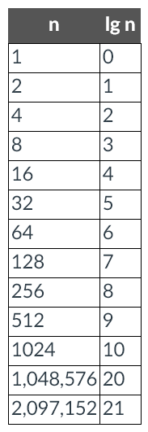
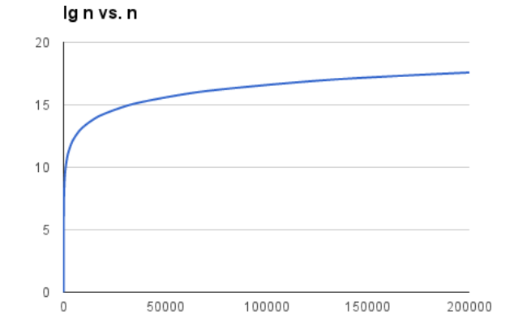
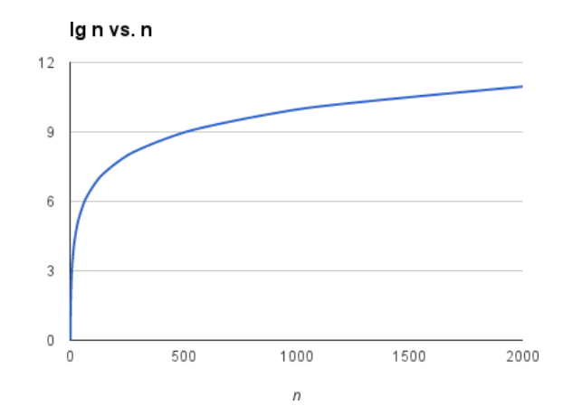
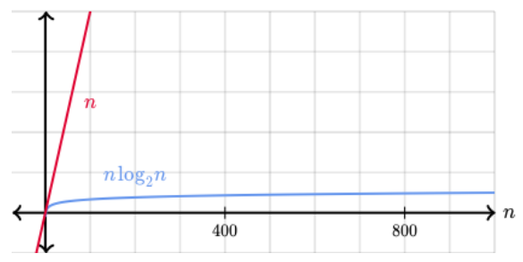

Week 3
Overview
The programs we wrote last week were fine for getting started, but they were inherently limited. This week we will extend our skills by learning how to write programs that utilize conditional logic to make decisions. We will also be looking deeper into algorithms.
Objectives
By the end of this week, you should be able to:
- Understand and use boolean operators
- Apply conditional logic in a Python program
Readings & Resources
- All of the readings are in the module for the week. The lectures are interactive, make sure you complete the hands-on exercises inside the lectures.
Activities & Assignments
- Complete the Self-Paced activities in PyCharm. Try to do these early in the week, as it will give you time to ask questions.
- Week 3: Scripting Discussion. Your initial post is DUE WEDNESDAY NIGHT
- Complete the programming projects
Lesson
Flow Control Part I
Boolean Introduction Video
Boolean Values
- Boolean data types have only two values
True and False
Comparison Operators
- Comparison Operators evaluate to a single boolean value
| Operator |
Meaning |
== |
Equal to |
!= |
Not equal to |
< |
Less than |
> |
Greater than |
<= |
Less than or equal to |
>= |
Greater than or equal to |
Boolean Operators
- The three boolean operators are
and, or, and not
- Use them to compare boolean values
- A truth table shows every possible result of a boolean operator
and operator
| Expression |
Evaluates to... |
| True and True |
True |
| True and False |
False |
| False and True |
False |
| False and False |
False |
or operator
| Expression |
Evaluates to... |
| True or True |
True |
| True or False |
True |
| False or True |
True |
| False or False |
False |
not operator
| Expression |
Evaluates to... |
| not True |
False |
| not False |
True |
Flow Control Part Two
Elements of Flow Control
Conditions
- A condition is a more specific name in the context of flow control statements
- A flow control statement decides what to do based on whether its condition is
True or False
Blocks of Code
- Lines of Python code can be grouped together in blocks
- Blocks begin when the indentation increases.
- Blocks can contain other blocks.
- Blocks end when the indentation decreases to zero or to a containing block’s indentation.
Example of a block
name = 'Mary'
password = 'swordfish'
if name == 'Mary':
print('Hello Mary')
if password == 'swordfish':
print('Access granted.')
else:
print('Wrong password.')
if Statements
if statement will execute if statement's condition is True
else Statements
else statement can optionally follow an if clause
elif Statements
- Only one
if or else clauses will execute, elif allows many possible clauses to execute
- The
elif statements are executed in order, and once one of them is found to be True, the rest of the elif clauses are automatically skipped
Binary Search
- Let's look a bit closer at the binary search algorithm from the first week
- Binary search is the fastest algorithm for an already sorted list
- The technique of cutting the search space in half each time will work for any list of items as long as that list is already sorted
- Binary search is also especially efficient with larger number spaces for searching
- Simulation Linear vs. Binary search for finding a number in a list https://www.cs.usfca.edu/~galles/visualization/Search.html
Analyzin the Speed of Binary Search
-
Binary search
- Every time we double the size of the array, we need at most one more guess
- Suppose we need at most $m$ guesses for an array of length $n$
- Then, for an array of length $2*n$, the first guess cuts the reasonable portion of the array down to size $n$
- At most $m$ guesses finish up, giving us a total of at most $m + 1$ guesses
-
We can express the number of guesses, in the worst case, as "the number of times we can repeatedly halve, starting at $n$, until we get the value 1, plus one"
-
Mathematically this is the base-2 logarithm of n
-
$log_2 n$
-
Review of logs https://www.khanacademy.org/math/algebra2/exponential-and-logarithmic-functions/introduction-to-logarithms/v/logarithms

Table as chart:

Table as chart zoomed:

- The logarithm function grows very slowly
- When n is not a power of 2, we can just go up to the next higher power of 2
- For an array whose length is 1000, the next higher power of 2 is 1024, which equals $2^10$
- Therefore, for a 1000-element array, binary search would require at most 11 (10 + 1) guesses
- Binary search is much faster than linear search (see below)

Additional Resources
Conditional Expressions from the Hands on Python Tutorial
Conditional Expressions from python-course.eu